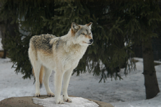
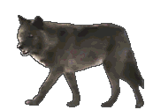

SPIRIT
OF THE MOUNTAIN
A Story Poem
By g.l. bass (the ghostbear)
January 2006-2007
Ed: January 2008

The full moon of the wolf
Breaks slowly through black
Remnants of snow clouds.
Long shadows cast down
Across vast white canvas
Of soft new snow.
Down the mountain
Through tall pinnacle pines,
Stretched east,
Down over the bluff,
Out across the valley.
Dim moon light reflects
And finds it way,
Shimmering and filtering
Over new snow,
Upon a deep frozen night.
Out of the forest tree
line,
A lone figure,
Slides and glides,
A ghost,
Through the night.
He sifts his way in and out
Of the forest edge.
His panting breath sends
Small clouds that reveal
His secret passage
From clearing to clearing.
Finally,
He finds the point,
Where the forest falls
From Mountain plateau
To the steep, stark, bluff.
It points like a ship’s bow
Out over the steep canyon
Thousands of feet below.
Each leap and bound burries him
Nearly chest deep in new snow,
Far and distant behind him,
The muffled sound of many others
Moving, gliding, through deep snow
Breaks the silence of the deep night,
Breaks the silence of dense forest,
Paled in full moon light,
Their eyes gleam on the edge
Of the forest line.
He stops,
Stands alone,
Far out on the extreme point,
Looking out over the bluff’s fall,
Down across the distant river,
Far across the valley,
Only a spot in the night sky,
The village lights remind,
Of a new time,
A time of change.
It reminds
Those who live with the Mountain
They are no longer alone.
He turns,
The pack of Mountain Spirits
Line along the forest edge,
This is and has been,
For years,
His home.
He shakes all over,
The snow wet and melting
From his body’s heat.
The snow sprays off his dense fur,
A mountain spirit,
He is larger,
His chest broader,
His color bold white,
He is the Alpha.
Behind him the remainder
Of the large pack slips
In and out of the forest edge,
Their eyes flashing through the night,
A spotted myriad of piercing dots,
Peering through the moonlight.
He stops, looks back,
And begins a song,
A low climbing howl,
That climbs up the mountain’s pinnacle,
It floats out over and off the bluff,
Down the mountain.
And echoes back over the tops of trees
Across the valley.
The pack holds and stops.
They listen to his lone,
Mournful,
Chilling song.
He is the Alpha Wolf,
He has always been the Alpha.
Once, he was shunned from the pack,
Who roam and call the Canyon valley
Their home.
He was large, and ghost white,
Rather than give in to the Black
Canyon Alpha,
He sought safety, refuge,
A new life,
High in the forests of the mountain.
There he escaped to,
Here he remains;
Learning the ways of the mountain,
The ways of the Cougar,
The ways of the Sheep,
The ways of the Elk,
The ways of the Bear,
He learned the secret of hunting
The mountain,
He let the mountain into his heart,
He became a part of the mountain,
The hunting spots,
The silent, secret passage ways,
The trails up through cliffs,
In and out of the bluffs,
Through the tops of the tall peaks,
Across the glaciers,
Thick in ice,
Even in summer.
He learned, struggled, and survived,
Where few others of his kind
Had been able to live before,
But he took all those abandoned,
All those outcast,
Into his family,
Into his heart,
He became the Alpha,
Not through battle,
But rather,
Through taking care of the others.
He was the Alpha,
The teacher,
The leader,
The Mountain’s chosen one,
When others, like him before,
Sought refuge in the mountains,
He found them,
And taught them,
The ways of the mountain,
The passages, the secrets of the forest,
Even the lessons of how to live
Above the tree line.
He accepted all,
Took care of all,
Cared for all,
And now,
While no longer the biggest,
No longer the strongest,
He remained the most revered,
Honored, and loved.
The pack had grown,
Over the years,
They remain a legend,
Almost like ghosts
They stay close
To the mountain.
They remain hidden,
Yet they remain unchallenged,
Not even the fierce Canyon wolves
Attempt to cross their boundaries,
Or force their will upon
The secret, silent, pack
Known as the Spirits of the Mountain.
But now,
On this night,
Below the bright lantern
Of the full moon of the wolf,
He stand alone-
Out on the edge,
On the brink of the bluff.
His mate,
His most dear love,
Has disappeared down out of the mountain forest,
Beyond the high plateau,
Down through hardwoods,
Across the canyon towards
The river,
And worst of all he fears
Towards the village,
So far and distant away.
She had met him when they
Both were young,
He had found her injured,
Taken care of her,
And she followed him up into the mountains,
Where together they learned a new life.
After a few years
She had returned to the Canyon Pack,
Attempting to once again
Find her family.
He thought he had lost her
To the dark Alpha Wolf of the Valley Pack
Who reigned over the Canyon wolves,
Far below the mountain.
She returned to the Canyon,
She longed to be back with her family again.
But from time to time,
He would venture down out of his
Beloved, secret, refuge in the mountains,
Off the plateau,
And watch over her.
One spring, when he had stolen his way,
Hidden away,
Just out of sight of the Canyon Pack,
He watched over her,
And he watched how the dark Canyon Alpha
Reigned, how the dark Canyon Alpha treated her,
He knew if he was discovered,
The Canyon wolves would kill him,
But his love for his mate was stronger
Than his fear of the dark wolves.
He maintained his secrecy,
He did not hunt,
Drank very little,
And remained out of wind scent.
Somehow,
She knew he was there,
Each day,
She would look up in his direction.
She had found,
Rather than be accepted back into the pack,
Her family,
She was treated as an outcast,
Her mountain ways remained with her.
She had found,
She couldn’t go home again,
All had changed,
She was different now.
One night,
When the pack was preparing to
Move out on the hunt,
She slipped away.
She knew where her home was now,
She knew her love was waiting for her.
She had to return to the mountain.
She began her climb back
Up the mountain.
She saw him in the distance,
But he would not let her come to him,
He allowed her only stay within
Visual distance,
He was concerned about her safety,
Should she be discovered
With him,
The dark Canyon Alpha
Would kill her.
Instead,
He waited until they had climbed
Back across and out of the lower valley forest.
Each time she would get close to him,
He would turn,
Stare back at her,
Call to her,
And then sped on,
Climb on.
Finally,
When he had broken across
The Mountain’s line,
Out of danger,
He surprised her,
And their greeting was one of
Longing,
One of passion,
Most of all one of love.
They remained together,
Alone for two days,
Secretly hidden above the valley forest line,
But below the mountain,
Beneath the high bluffs,
Reuniting their love,
Their passion,
And the ties that bind two souls
Together forever.
That was a few years ago,
Now, tonight,
He stood alone out on the long,
Peak of the bluff,
He sang his song that echoed back
Off the mountain,
His howl broke the silence
Of the frozen winter night,
It filtered sadness down
Out of from the bluffs
Across the valley below,
His song was one of heartache,
One of goodbye.
She had given him a son,
A young, tall white Wolf.
The young wolves sense and need for adventure had turned
To tragedy.
Men from across the river,
From another place far away,
Had come to capture
Proof that the legendary mountain wolves existed.
The young wolf had fallen
Into one of their traps,
Caged, he was taken down the mountain,
Off the plateau,
Down through the canyon and towards the river.
She had discovered her son’s capture.
She followed searching, watching,
Trying to find a way to rescue him.
Now, the Alpha had lost
Not only the love of his life,
But his son as well.
The Pack had followed him,
It had been an entire day since
She had followed the men,
They had broken camp and taken
Their caged captive off an a sled.
They had moved down and away from the mountain.
They were following the trail
Through the dense forest below,
Down across the canyon,
Towards and across the river,
Where the village spread out
Along the other side of the river.
Now, he had to embark on this mission.
He had to follow,
Protect her,
And find a way to bring his family back.
He had to, if possible,
Save his son from certain imprisonment,
And return both his love and his son
Back to their mountain home,
Back to safety,
Bring them home to their mountain hide away.
They belonged to him,
They belonged to the mountain,
Their home was here
Above, on the plateau.
Now, only he could find them,
It was too dangerous to allow others to follow.
Besides the large canyon pack,
There were men,
And the route he had to travel to catch them,
While fast,
Was a very steep, secret
And treacherous journey.
Only he knew the way,
It was too secret and dangerous
To teach the others.
So, now he forbade the others from following,
This was his journey and his alone.
His song rang out across the sky,
And gathered about the pinnacle of the mountain,
Then fell below,
Down across the valley,
It was goodbye to the mountains,
The plateau,
Goodbye to the pack,
Goodbye to the beloved mountains.
The Pack, gathered, watched
From the edge of the treeline.
Two of the warriors who hunted beside
him,
Who knew his secret ways,
Howled their soulful refrain out across the forest,
And down across the valley.
The whole pack sang their mournful, sad, song
As if in prayer to the moon.
Then, they were all amazed,
As he seemed to leap off the bluff’s edge
And disappear,
He was gone.
Gone into the night,
Gone amidst their night’s song,
Gone beneath the light of the full moon.
CHAPTER II
THE JOURNEY
I am the White Wolf,
The alpha of the Spirit of the Mountain,
How can I tell you about my journey?
Only once before have I attempted the tunnel pass
Down through the mountain.
As long as I have been roaming this mountain,
Surviving,
Finding my way,
Learning,
At first through fear of death,
Killing and eating anything I could to stay alive,
Until I learned that the mountain
Would come to me if only
I would learn to be a part of it,
Not that I could make it a part of me,
I had to learn its ways,
I had to humble myself to the mountain,
Give in to it,
Then I could be free.
No other wolf,
Except me attempted to come here,
Climb here,
Live this high within the mountain’s realm.
I learned its caves,
Tunnels, secrets, hidden passageways,
It’s hide-a-ways.
And even when there was harsh winters,
When all looked bleak and desperate,
The Mountain will give of itself
And I learned that it would provide.
If I listened and learned,
It would not only be my solice,
But indeed, my safety.
The Mountain is my protector,
My mother earth,
If I listened to her,
She would save and take care of me.
I learned from her
To take no more than I needed,
I learn to respect the rights of the cougar,
The rights of the bear,
The rights of all who climb,
Live and find safety here.
I learned to accept the mountain’s purpose for me,
I was to be the Mountain’s servant,
To cull out the diseased,
The sick,
The weak,
The injured,
But leave the strong to
Live on.
If I lived within my purpose.
The mountain would provide me
With more than plenty.
I had to learn to understand the Mountain’s ways,
And even when snows became so deep,
Impassable,,
The mountain would show me safe hide-a-ways,
An if I but respected her pathways
The mountain would provide for me,
And provide for my family.
So, I make peace with the Cougar,
I make peace with the bear,
And they with me.
I take in all those who were driven out
Of the other Packs below-
Other young males who
Often brought with them
She wolves and children,
Abandoned and left astray.
I accepted all,
I taught them to respect
The mountain’s ways.
Now, they’re all my family.
We are the wolves of the mountain.
We live by the mountain’s rules,
We give back as much as we take,
And we take only what the mountain allows.
It is a different life from the valley.
They’re predators,
They don’t respect the bear’s range,
Or his will upon the forest,
They take from the family of the Reindeer,
The family of the beaver,
They don’t understand the ways of the
Wolves of the Mountain.
Once I lost the one I love most
To the strong, dark, valley Alpha Wolf,
He is the strong, dark lord of the valley.
He rules by cruelty, fear, and intimidation.
My love only wanted to go back to her family,
Bu she soon learned the difference between
His ways and the ways of the spirit of the mountain,
And while he was much younger, stronger, and more powerful,
Than me,
She was, upon her return,
Not accepted back in her family,
They did not kill her,
But she remained an outcast of the pack.
She had to give obedience to the Alpha female,
Who like the dark lord,
Rules by fear, cruelty and power.
My love returned to me,
When I traveled the Mountain tunnel,
I found her, and she followed me,
Back home to the Mountain.
Had we been caught,
Surely, we would both have been killed.
The dark valley wolves
Hunt and kill without mercy.
Now, man has come to the mountain.
He’s trapped my son,
And his mother,
My true love followed them.
My son is young,
His is learning the ways of the mountain,
He is learning the ways of the mountain wolf,
The spirit of the mountain.
Man has come to the mountain,
Entrapped him and taken him off
To beyond the valley.
I don’t know their purpose,
Or why they stole him away,
They haven’t killed him,
But I fear for his life.
My true love followed them,
I fear for her as well,
She is unwilling to give him up to the men.
She’s followed them to where men live below,
Down through the dense forest,
Through the canyon
And beyond the valley.
Now, I must go find her.
I must go find him.
I shall bring them both back,
I must bring them home,
Back to the mountain where they belong.
Should I perish,
Then, I will have left the mountain with
The clan-
They know the mountain and the
Mountain’s ways.
I have taught them well
And they will not abandon
Their mountain lessons-
Or their mountain ways.
Down through the treacherous tunnel,
A thousand of feet below,
Like a shaft made by fast moving,
Pouring water,
Its mouth is a small cave
Beneath the peak of the bluff,
Then it falls,
In spring it is a waterfall,
That falls through and over steps inside
The mountain,
Then it flows in a stream
Out of a secret cave a mile below,
The stream runs into the lake,
Now frozen over.
I speed down the mountain,
Through the tunnel,
Down, down, down,
Nearly falling,
So fast, I cannot stop,
I must stay on my feet,
Until finally,
Out onto the ice,
I slide, tumble, and glide.
I find my way down through the passage,
Out into the forest,
And out across the lake.
I stand, shake ice, snow,
And debris that covers me.
Deep in my coat,
Ice beads hold fast to me,
But I cannot rest,
I must continue on again.
I travel across the frozen lake
I am safer here,
The valley wolves don’t understand
Crossing ice.
Once I reach the other side
I must take care not to be discovered,
The Dark Lord of the valley
Would kill me and try to take over the mountain.
Across the ice,
I can see the men’s trail,
And the sled tracks.
I sense her,
Her scent is still in the air,
She’s close behind the men
Who pull the box.
The Valley Wolves will not
Sense her, or try to kill her,
As long as she stays close to the men.
Men shoot wolves-the valley wolves-
She must stay close,
But she must also stay hidden.
I travel fast along the trail,
But not on the trail,
Through brush,
Thick tree stand,
Hidden amongst pines,
I can never stay in the open
For long.
I must be a ghost within the forest,
I travel through night,
Into the early morning.
I’m sure I’m still miles behind them.
I sense and see a Valley wolf patrol.
They’re following the men’s trail,
I’m just hope they haven’t discovered
That she’s there,
Not far behind the me.
I stay out of the wind’s reach,
I stay low to the snow,
Hiding in the rocks and brush,
Never on the trail,
But never leaving it.
I sense that the Valley Wolf patrol
Is between me and the men,
Between me and my loved ones.
I have crossed two camps,
The have stopped twice along this trail,
The snow’s deep,
They are pulling a heavy sled.
I have seen where she’s stayed close,
Out of site,
But surely,
Surely, the men know she’s there.
Surely, by now,
The dark wolf patrol
Have discovered her.
I pray for her safety.
It has been two days,
I know that I am close behind,
Just a few miles behind.
The men will soon make a camp
Maybe for the last time before they
Cross the river.
Once they cross the great river,
It may be too late.
I must find a way to circle the Valley patrol
Without being seen, heard or smelled.
It is snowing again,
That is good for me,
The Mountain sends winds and snow down to
Protect me-cover my path and let me hide.
My coloring will flow into the snow,
The dark ones will be easy to see,
I am close behind them.
They still are not aware of me.
Their focus is on the men,
And on her.
The men have killed four deer,
They’re dragging and hauling them
On the sled
Pulled by two horses.
The dark valley wolves are hunting them,
The deer, the horses, and maybe even the men.
I sense the Valley patrol has stopped on the trail,
I do not know if they know where my love is,
But they know she’s there, somewhere.
They must be wondering why she came
Down from the mountains,
They must be wondering,
“Why is she following the men?”
The day has past,
And night is falling again.
The patrol has gone off the trail
They have disappeared into the forest.
I can hear them move past me,
I fear they may sense me,
They stop only a short distance from me.
But they can’t sense me,
I am lying down in the creek water,
Along side the shoreline
Hidden in the snow, ice and water,
It is cold,
But they cannot see sense me here,
In this new mountain snow.
They continue on,
I know they’re going to go back
To the rest of the pack.
They will all return for the final hunt.
I must travel fast.
Once they’ve gone,
I shake out the freezing water,
Drink one last drink,
And am off on the trail.
I can travel faster now,
It is the third day,
And the men will be camping
For the last time soon.
I cannot tarry,
My true love and my son
May cross the river tomorrow,
And I know the Dark Valley wolves
Will end their hunt tonight before
The men can make their crossing.
I must move cautiously,
But I must move fast,
I cannot tarry!
CHAPTER III
THE BATTLE
I travel on the trail now.
The Valley Pack will sense me,
When they get close,
Behind me the moon’s changing its face,
Its light is dim across the new snow,
The mountain is far behind now.
I am in the Valley of the Dark wolves.
The Pack has reunited and their family
Hunt song echoes through the forest.
The men do not understand their song,
But I know,
They’re coming,
They’ll be here soon.
I must travel fast,
I can no longer worry
About being discovered by the dark wolves,
I have no choice,
If I am to save the ones I love.
Behind me,
All night,
I hear the pack.
They’re coming,
They’re coming fast.
They stop,
Howl,
And then gather,
And begin again.
They are on the hunt.
I don’t know if they’re hunting
The deer,
My loved ones,
Or the men,
Or maybe all of them.
It is near morning,
The moon is a distant slice
In the sky,
I smell the camp fire smoke
In the air.
I am within a mile of the camp.
I sense that she is near me.
I find her fresh markings.
Does she know that I am behind her?
She has learned well,
She’s staying hidden,
Out of site,
But still near the men,
Just off the trail.
I move slow, stalking and staying low,
I slow now and begin
Behind me I sense the Pack of the dark
Valley wolves is coming ever closer.
There are many.
But I must be cautious,
The men have death sticks,
They don’t know me from the dark
Valley wolves.
They’ll kill me if they see me.
I sense that she is close by.
I now see the camp fire,
It is glowing low,
The men have tented
And are sleeping now.
Across the camp,
I see the box,
The cage they have my son in,
He’s pacing.
He knows she’s close by.
I see her-there she is,
She’s trying to find a way to set him free.
She doesn’t understand how men’s boxes work.
I know these cages,
I’ve seen them before.
She stops,
Brushes up against the cage and looks across the camp.
She see’s me-
She wines low,
She paces and stares back at me.
She’s scared,
She’s panicky,
She knows the river is close by.
Tomorrow, she may die.
I stare into her eyes,
She understands that she must
Stand by, move away,
I tell her,
Tell him, my son,
To be still.
I sense her across the night.
He lays down in the cage.
She lays near by.
The men are still asleep.
I must find a way around the tent,
I sink low, crouching in the snow.
I find my way around the camp,
Behind me I hear the Valley Pack,
They’re close.
The men have food, rations,
The deer carcasses’ are strapped
To the sled.
We are in deep winter.
The men have killed other animals,
Several beaver hides are strapped atop the sled as well.
I can smell left over meat drippings
Burning in the campfire’s coals.
I see a death stick standing beside the sled.
I slide next to her,
We greet,
She is sad,
But I must move fast,
I can hear the Pack now,
And the men are stirring.
I begin to knaw and chew the leather strap that
Ties the Cage and locks it.
Suddenly, I find the middle where it is knotted,
Pull on it, and it comes free.
I pull it away from the cage,
And I tell my son,
“Quite! Stay low-
Push on the door.”
He pushes and it opens.
I hear the Pack cry,
The Valley wolves are here,
They’re on the other side of the camp,
They’re coming fast.
It’s the whole pack.
The Dark alpha is leading the way.
They smell the deer,
They smell the food,
Now, I know what they’re hunting.
These are careless me,
They’ve left the deer carcasses
Uncovered on the sled.
They’ve hung their snowshoes
Behind the tent,
Slowly, I crawl around her,
I meet her,
She is whining,
She’s terrified.
My son is whining,
I tell him, “Quiet!”
He stops.
I look at the box.
Slowly, cautiously, he steps
To the edge of the door,
Then he jumps,
He is free!
The pack arrives,
They rush the sled,
They move fast, furiously but silent.
They surround the camp,
One of the dark ones sees her,
He is startled,
She is afraid,
He grabs at her,
I surprise him,
Attack him,
Grip him in the throat and take him down.
He is dead.
The noise,
The movement of the dark wolves
Has awakened the men.
They burst from the tent,
Grab their death sticks,
They begin firing,
The death sticks explode in the night,
The valley wolves are pulling the dear carcasses
And other meat and hides from the sled,
They’re tearing at everything.
The men are shooting at them,
I seen two, three, then four go down.
Across the camp,
The dark Valley Lord sees me.
He growls and grits his teeth fiercely at me.
He is surprised I am there.
They are all growling, howling, screaming,
They know I’m here,
I tell my love and my son to get away,
“Get away from me now!
Get away, away, away, now!”
They’re off,
Off into the forest.
They leap into the darkness away from
the camp.
I tell them,
Move far away, from the dark wolves.
The men are firing at all the wolves now.
One man sees me and yells,
He sees that the cage is empty.
He shoots at me,
I leap into the trees and quickly jump
Across the camp,
I must stop the dark wolves from
Chasing down my love and my son.
The dark wolves are still tearing at the deer carcasses
Caring them away.
The dark Alpha see’s me,
He stops tearing at the deer.
He let’s two other wolves
Pull it down the trail.
The men are firing all around us,
Several dark wolves have been shot.
Other’s are tearing and caring pieces of meat and hide
Off into the trees.
Other wolves are running through the camp,
Two dark wolves knock one of the men into the snow.
They grab at his arms and legs,
The dark lord bolts through the campfire,
Leaps at the man,
Knocks the death stick away,
And bites at the man’s throat.
The other two men are beating at the wolves with
The stocks of their death sticks.
One man shoots one of the wolves,
And the wolf dies still holding onto the man’s arm.
My son and my love are now on the other side of the camp.
They have escaped.
The dark Lord of the Valley see’s me,
He will not let me go.
I turn to escape.
But the dark lord leaps at me.
He will not allow me to pass
Even as the men shoot at both of us.
The food on the sled has all been torn away,
The dark wolves are now off in the woods,
Five or six lay dead or wounded around the camp.
One man is down,
Blood is running out of his neck and arm,
He is screaming.
Another man is bending near him,
Putting snow on his wounds,
The other man is still shooting,
I leap across the camp,
The man see’s me and shoots at me.
I cross through the trees,
The dark Lord Alpha is coming for me,
He leaps and we meet in mid air.
He is much stronger than me,
But I have him by his throat,
We fall into the snow,
He falls on top of me.
A shot rings out,
The dark Lord falls on top of me.
There is blood everywhere,
Another dark wolf drops beside me,
The Dark Lord has me
By the back of my neck,
But there is no grip.
I roll away from him,
He is dead.
Another shot rings out,
A burning sting grazes through
The top of my neck and my shoulders.
I leap past two or three dark wolves
Who are carrying off the last deer carcass.
Shots continue to scream past me
Through the early morning darkness,
But I am in the trees now.
Three or four dark wolves
Begin after me, but I turn,
My growl and howl tells them,
“ I am Lord of the Mountain wolves!
The Dark Lord is dead!
You shall not live should you
Try to take vengeance upon me!”
More shots ring out,
And a man is coming down the trail,
He is shooting at the dark wolves
Pulling the deer carcass away.
They stare at me for seconds,
Then grap what they can from the deer,
And escape off into the woods.
I speed down the trail out of reach
Of the death sticks.
I cannot see the men any longer.
I stop,
I stand atop a ridge in the forest,
I call back in loud, warning, my howl,
Into the morning sun rise,
A warning to all,
“I am the master Lord of the mountain wolves.
Let me pass and I shall not
Seek revenge upon you.
Pursue me not,
Less you shall all die.”
I turn and five or six dark wolves
Are standing on the trail
Behind me.
Some have food, some have parts of deer meat,
Some are wounded, some are threatening me,
None of them challenge me.
They believe I killed the dark Lord
And they all hear my warning.
The men are yelling-I can still
Hear the loud screams of the man
Who was attacked by the dark lord.
He is bitten in the throat.
I look ahead-
Call to my love and my son.
The Valley forest is free to our passing now.
But we must travel fast-
We cannot tarry-
We cannot allow the dark wolves of the
Valley to challenge us.
Now their stories will be
How the dark Lord was killed
By the white mountain Alpha
Who came to save his son,
And his loved one.
How the mountain alpha
Left them to theirs and
Went back to the Mountain.
They will count their dead,
And understand the dark Lord’s
Daring attack upon the men’s camp
Was foolish and only lead to the death
Of many of their bravest and strongest.
Only I know the truth.
The dark Lord would have killed me.
But a death stick meant for me
Killed him as he struck out at me.
The mountain ways saved me.
I wanted not what the men had,
I came only to save those
Whom I love.
But I am a mountain wolf,
And my mountain family is everything to me.
The dark Lord died taking what was not his,
He died attacking what all wolves
Know is true,
Men and their death sticks
Are not to be challenged,
Even in the deepest winter,
When there is the deepest hunger.
My love , our son, and I
Will return to the mountain.
I will not take anything from the valley.
I will leave the valley to the dark wolves.
Another dark Lord will rise as Alpha
From amongst the pack.
But now he will learn and know the story
Of the Mountain wolves.
Perhaps, he will learn the way of the forest,
As I have learned the way of the mountain.
But that is not now for me to say.
That is not today.
I sense my love and my son
Are far up the trail now.
I must hurry to catch them,
I must show them the safe way,
The secret way,
The way back home
To the mountains.
The mountain wolves,
Our family,
And the mountain,
Are waiting for our return.
We must hurry,
But there is much
We have learned
About the forest,
About the dark wolves,
And about men.
They are here now,
They will come again.
CHAPTER IV
THE RANCHERS
The lantern in the second story,
Of the large, long, log ranch house,
Came alive quickly,
From one room to another
It moved fast and furiously,
Down the stairs,
Out the front door,
Across the porch,
Then through the snow
To the horse barn.
Two voices yelled back and forth,
“You get the guns. I’ll saddle up the horses.”
They had been awakened by the shots,
Echoing one after another through the
Forest, up the hill, out of the woods,
And around the house.
The yelling, the howling,
The scream,
Miles and miles away,
Down near the river.
They knew three men had come
Through the forest and
Had headed into the mountain,
They feared trouble,
But now,
This was more than trouble.
The morning was still dark,
But a slight, dim grin
Of winter sun slid into and across
The deep, dark sky.
Stars were still hung against the
Distant azure horizon,
Two men on horse back
Galloped out from the barn,
A third, younger man,
Closed the doors behind them,
They both had rifles in hand and ready.
They crossed through the woods,
Across the fields,
Down out of the highland,
Through the dense pines,
Then up along the trail
Now clear with sled tracks,
Then covered by a myriad of
Wolf tracks.
“Mitch, lookie here!
Wolves everywhere!”
“Yeah,” came the reply,
“Strange, a lone set of tracks
Way off, over here,
Following another set,
Smaller prints-looks strange.”
“John!”
“Yeah Mitch?”
“There were other men,
The ones I think we saw a few days ago,
They’re pulling a sled along here.
Sled’s heavy.
They’re carrying something.
Two men on horses as well,
Maybe the other’s in the sled-
What’d you think?”
“Mitch, looks like it to me.
Yeah, they’re pulling something heavy.
Maybe pelts and meat.
Wonder if its those trappers again.
I thought they’d moved on-
Awful damn funny them bein out here
In this damn cold winter.
Stranger yet are all these Wolf tracks.
You know looks like the whole damn
Valley pack is followin’ them.
They got somethin’ the pack wants for sure.”
“Mitch, looks like it to me too.
From the shots we heard
Somethin’s really up-
Why’d they be shootin
In the middle of the night?
I think I heard a scream as well.
Well, there’s sure enough trouble.
We better move out and move fast.
The trail’s sure easy to follow.”
They mounted up again,
Rode off down the trail.
They galloped as quickly as
They could through the deep
Soft snow.
A mile down the trail,
They stopped again,
“Hey John,
Hold up here,
You see those dark wolves
Over there,
They’re knawing on something.
They scooted soon as they saw us,
Let’s take a look.
I don’t know how far ahead those trappers are-
Over here, over here,
See, what’d I tell ya!
Blood from somethin’
Drops all over here.
Look at these tracks comin’ together here.
God! How many wolves you think meetin’ here?”
“Dam ! John, I’ll bet fifteen or twenty of em’
I had no idea the Valley pack gotten that big.
Trails really clear now,
They’re after the men and whatever
They got on that sled a theirs.
Sun’s up now,
We better get movin’ again.”
“Mitch!”
“What John?”
“Wait, somethin’ else goin on here.
There’s a separate set of tracks here.
Don’t understand this one.
Big tracks-big paws,
Way over here all by himself.
I think his tracks are older than the packs,
He’s followin’ the sled too,
But he’s stayin’ out a site.
Never on the trail,
Way over here as smaller set,
Older, much older,
Seem’s he’s followin’ them.
Strange-mighty strange.”
“Come on John.
We can’t wait no longer.
We ain’t gonna solve nothin’ here.
I think those trapper fella’s gonna need our help
Sure enough now, by what I can see here.
I gotta real bad feelin’ about all this.
Been a damn cold and long winter,
Wolves, this many of em,
Need a lot a food to sustain now.
We better get on with it fast.”
The two men mount up again,
And gallop down the trail again.
They ride fast down the trail
Following the sled tracks,
Down the trail,
They turn the corner in the woods,
Near the river,
They see the camp,
They gallop up quickly into the camp.
One man is standing with his rifle,
Another is kneeling on the ground,
Attending to a third who’s bleeding
From his neck and arm.
“Hey! Who are you guys? Thank God you’re here!
We got a man down here.
Attacked by wolves last night.
Not too long ago neither.”
The man kneeling looks up,
“He’s hurt pretty bad.
Big black wolf jumped him.
Like to tear his head off.”
The lead man on a tall chestnut horse,
Now full of sweat,
Slid to the ground.
“What the hell!
There’s maybe 8 or 10 wolves
All shot here.
That big one on the trail’s
A monster!
What the hell went on here?
What you doin’ with the cage.
Ah hell!
Mitch, we gotta’ tend to this man now!
Got that kit, bandages, alcohol,
All that stuff?”
“Yeah John I got it.
Better let me take a look see
At this fella. Looks to me
Like I gotta’ do some cleanin’
And sewin’ for sure.”
Mitch bends down next to the man kneeling,
The man laying on the ground in the snow
Is nearly unconscious.
“He’s lost some blood.”
“Yeah, hope not enough to kill em.
Better get him into the tent,
Cover him,
We gotta’ do some quick work here.”
They pull the man into the tent,
They begin to furiously take off
His shirt and clean his wounds with
Clean rags and alcohol.
The other men are still standing by the campfire,
Now scattered about but still burning.
“That there’s Mitch,
I’m John. We’re from the ranch that edges
Up and into the forest.
It goes all the way to just below the mountain there.
Not sure where the ranch ends and the forest begins,
I think you fella’s done some trespassin here-
But we got other things to tend to here now.
You ain’t those trappers we thought you were.
What the hell you doin’ here,
And what’s that cage all about?”
The other man replies,
“I’m Bill,
That there’s Chuck,
And the guy that’s bit is Harv.
His idea to come here anyway.
We’re told we’d get paid
To bring back one of them Mountain wolves,
You know the big white ones,
Livin’ up in those mountains?
Well, we captured one, didn’t hurt him.
We almost had two,
A she- wolf been followin’ us for days here,
Always stayin’ a little bit outta sight.
We were gonna get her too,
Then all this hell broke lose.
We had, as you can rightly see,
Some deer we shot,
A few beaver too,
We caught,
Only for eatin’ purposes,
Get us by you know.
Somehow,
Chuck says,
He saw this big White wolf
Tearin’ at the cage.
Damn leather strap’s near bit in half.
Then all these Dark wolves attacked the camp.
They we’re after the meat,
The other food as well.
We started shootin at em
And this big black one came out of the shadow,
Jumped poor old Harv there,
Then grabbed at that deer carcass and was pullin’ it
Down the trail.
Damdest thing I ever saw,
Chuck here too,
This big White one,
Outta no where,
Jumps across the campfire,
And meets and is fightin’ with
This big black one in mid air.
Boy, they went at it,
I tried shootin’ em both,
Figured their hides be worth somethin’
Chuck there shot a bunch of em tryin’
To tear the deer carcasses from the sled.
They sure made a mess.
Somehow in the middle all that mess,
The cage got opened and the wolf
We had, a young male,
Got away.
That big white one,
He got away too.
The big dark one came down on top of him,
And I shot him.
Thought I got the white one too,
But somehow glad I didn’t now.”
Out of the tent,
Mitch yells to John,
“Hey John,
We got this guy stopped bleedin’ now.
Stitched him up too.
Not a good job,
But good enough for now.
He’s weak, but dam luckily the bite
Didn’t get his arteries-
If we can get him back to the ranch,
Where we got some more medical supplies,
And can maybe can stop him from getting’ an infection.
He might live.”
John looks about,
“We better get that stuff off the sled,
We got plenty to eat at the ranch.
We gotta get this man back there pronto.
Hell of a story happened here.
Who the hell’s gonna pay you for
One of those White Wolves?
I lived up here most of my life
I’ve only seen one or two,
Thought I was seenin’ things.
You guys saw quite the battle here,
Givin’ all the valley wolves comin’
At ya here,
You’re all lucky to be livin.
Shouldn’t a shot at em.
Should a just let them have the meat,
They’d gone on their way.
They obviously weren’t after you fellas
Only the meat.
Bill-where the hell you fellas
Come from anyway?”
Bill begins to untie the rations and
Gear from the sled,
He looks down the trail,
“We’re from California-Harv’s from
Oregon. He’s the one heard stories about
These wolves here in Wyoming.
Some guy who collects all kinds of animals
Want’s one-says he’ll pay us hundred thousand
For a big male. One we had was young,
But he was gonna’ be a big one.
Big paws-not as big as the Big white fella
Who came outta nowhere though.
Hey-
Chuck and I’ll stay behind here and clean
Up all this mess.
We’ll skin out them wolves out too
Before we head on up to your ranch.
You guys just need to give us some direction.
How far you figure the ranch is from here?”
John’s hurriedly throwing stuff off the sled,
Then laying blankets and other padding down,
Getting it ready to put the man on it-
“Oh, I’d say we’re a several miles back up the trail,
Then a few miles up through the forest,
Across the corn fields,
We got a big spread here-
Cattle-Oil-Gas
In the winter, nothin’ moves,
We been havin’ a hell of time
Keepin’ the cattle movin’,
Keepin’ the wolves away from em.
Though they don’t kill but the ones
Who’re sick, diein’ or freezin’
We got em all in a canyon on the other side
Of the ranch, up out of the valley.
Keepin’ em fed the biggest thing.
They come down into these forests,
Once in awhile a straggler,
Them Valley wolves get em dam sure.”
Out from the tent,
The two men carry the man named Harv.
He’s still not fully conscious,
They’ve wrapped him in heavy coats,
Blankets, and place him on the sled.
John and Bill have tied two horses up to the sled,
Chuck shakes John and Mitch’s hand-
“Thank God for you boys!
Harv died sure as hell
If you boys hadn’t shown up.
Sweet Lord Jesus,
Look at this mess,
Didn’t think we shot that many.
God, that big dark devil’s gotta be
Dam near 200 pounds.
You fellas see that big White one?
He was something else.
Took on that big dark devil
Like he was crazed or somethin’.
Never saw anything like it.
They were all after our food-
Well enough-Harv needs help now.
Hope you can save him.
We’ll be up in a day or two-
Bill, you know how to go?”
Bill shakes Mitch and John’s hand,
“Well, you fellas’ leave some trail markin’s once
You get off the main trail and we can
Follow em to the ranch.
I think I know where it is. Thought
I saw it when we were up in the mountain
Catchin’ that young one we got-
So, you better be off now-
Harv’s in sorry bad shape.
God be with you-
Watch out for those black devils-
Damdest thing I ever saw how they
Came at us-that tales for another time-
Thanks-take care of Harv-“
Mitch grabbed the reigns of the horse hooked to the sled,
“Hey John, you comin?
Giddiup here.”
“Yeah Mitch, I’ll be with ya straight away.”
Harv began to awaken.
His eyes looked about-
“John looked him,
Dam sore huh?
You don’t me-I’m John.
Take a couple swigs on that there
Whiskey-keep ya warm.
We’re takin ya back to the ranch.
You got some healin’ to do.”
Harv smiled a long, slow, hard smile,
“Yeah-sore as hell.”
Then took a big drink from the whiskey bottle,
Coughed,
Mitch turned,
Laughed and said,
“Well, it ain’t runnin out yer throat so I guess
I sewed ya up good. Come on John,
We gotta get this boy home before he starts leakin’”
Harv swallowed, then spit out a mouthful,
Rolled his head and passed back into sleep.
John and Mitch hurried down the trail,
Pulling the sled with Harv on it behind.
They had to find their way winding through
The forest, the pines don’t allow a straight path.
By the time they reached the edge of the forest
It was night coming on.
“Hey Mitch,
We better stop here,
Make camp.
We can’t get this fella up through woods
And across those fields tonight yet.”
Harv began to awaken again,
He was moaning in pain.
They stopped, set up camp,
Made a fire,
And put up a lean to.
“John, I better check his wounds,
Tend to him again. We gotta keep that wound
From gettin’ infected. That sauve you got spose to do that,
I better put some more on, and fresh bandages.
Dam its cold, but that’ll help.
Son of gun’s lucky to be alive.”
Harv awakened,
‘Where the hell am I?
Who you guys?
I need some coffee!”
Mitch helped Harv sit up,
Then he helped him take
A drink of coffee,
Harv was able to chew down
Some Venison.
Mitch told Harv the story about how they’d heard the shots,
Come down from the ranch,
And saw the dead wolves about the camp.
How they met Bill and Chuck.
They knew the whole story,
And where they were taking him to heal up.
John had gone off up towards the mountain,
He returned, got off his horse,
Tied the horse near the fire.
“Got some coffee there for me too?
Dam that fire feels good!
How’s t he patient?”
Harv sat up on the sled,
Pulled up along side the fire,
“Hey man,
Thank you both for savin’ my life.
Hundred grand ain’t nothin’ when you’re lyin’
In the snow with your throat bit out-I’m tellin’ ya.
Hey, you guys figure out what happened to that big wolf we caught?
These mountain wolves are quite the legend for some people
Back in California. Suppose to be bigger and whiter,
Come’s from livin in up those mountains.
Saw the biggest damn white one I ever saw
Last night-came outta nowhere.
He took on that big dark devil-
It was amazin’”
“John looked down at Harv-
Yeah, we have a hell of time keepin’ those
Dark Valley wolves away from the cattle.
But Mitch and I been up here for years,
We ain’t never seen but one or two of those mountain ones.
Supposedly, from what the Indians tell me,
There’s a big one who they say is the kindred spirit’
Of the mountain. They say he’s protected by the mountain.
He and his kind don’t never come down and attack our cattle.
We question whether they really exist or not.
But you saw the big white one the Indians tell me about huh?”
Harv sipped on the coffee, laid his head back,
“Yeah, he was as close to me as you sittin right there.
He came from behind me-
Somehow he got that cage open too.
Let that other one out.
Thought I saw that she-wolf in the background
there as well-
That’d be three of ‘em-right?
Chuck and Bill were gonna try and catch her too before
All hell broke lose there.
What’d ya’ll suppose they attacked us for?”
Mitch poured some more coffee out for John,
Sat down on the saddle near the fire,
“Well, you know those Mountain wolves are legend
With the Indians. Kindred spirits of the mountain.
They tell us better not shoot one.
The mountain will have its revenge on us if we do.
Anyway, I don’t think, tell you the truth,
The Valley pack was after you. Its been a damn hard winter.
They were after those deer carcasses-you guys had four or five strapped
To the sled. They tore them apart-
Anyway, so you saw the big one.
He’s quite the legend with the Indians. Only a few of them
Have ever seen him. They say he travels like a ghost
Up and through those mountains.
They tell me if an Elk, moose, or sheep go down,
Sick-injured whatever, it’ll be gone the next day.
Gone without a trace.
They say he lives up there in the caves,
High above the tree line-
He’s all white-big paws-
They hear him howlin at night,
Specially when the moon is full.
I think they tell me there’s a pack up there now.
Seems whenever one of those valley wolves
Is born white, they shun it out and then
It disappears-strange dam thing.
So, you saw him huh?”
John laid back,
Threw a limb on the fire,
Watched its needles crackle and spit in the air,
“Well, let me tell ya what I think Harv.
I think you guys caught one of his-you know
The big white one.
The she-wolf was the mother of the one you caught,
She followed you and the big white one came after them both.
I think he’s the one that chewed that leather strap off,
I think he came after what was his.
But he had to save them from not only you guys,
But the dark valley wolves too.
They’d kill them both had they caught them you know.”
“Mitch came over,
Through the last bit of coffee out of his cup into the fire.
Tore off a piece of jerky,
Handed a piece to Harv-
There you go, see if this will stick in your graw.
Yeah, quite the story. Now I know
They’re up there for sure.
Well, boys, we better build the fire up,
Try to get some sleep-
Tomorrow’s goin to be haul getting you up
Through those forest and across those fields.”
Harv looked up at Mitch,
“Well, maybe I can ride tomorrow.
You guy’s won’t be needin to haul me
On this sled.
It’ll save alot a damn time.
Besides, the faster I get up there,
The better off I’m gonna be.
You guys think about just tiein’ me
On a saddle and we’ll be there
In half the time.”
Mitch looked down at him,
“We’ll see-we’ll see.
Don’t want to do nothin’ to
Start that bleedin up again.
We’ll see.”
The next day,
Mitch and John rigged up a brace
And harness,
They fit it to a saddle,
Put Harv up on the horse,
Tied Harv to the brace
And the saddle.
Before the sun had quite climbed
Across the long shadows of early morning,
John and Mitch were heading up through
The tall pines,
Mitch lead the horse Harv was on,
John lead the way.
They stored the sled on its side,
And carried only what they needed
Up through the forest, and on their way
To the ranch.
Far behind them,
Down the trail,
Bill and Chuck cleaned up the camp.
Skinned out the wolves,
Tied up the hides.
They built a large fire,
Made hot stew from the deer
That remained.
All night long,
They watched as dark wolves
Circled their camp.
They came close enough
So Bill and Chuck could see
Their gleaming eyes
On the edge of the woods.
They could hear howling,
Mourning and wolves crying
Off in the distance.
They were being watched-
The battle was over,
But now was a time of mourning.
Though the battle was over,
Bill and Chuck knew it wasn’t really over.
The next morning they packed only what they needed,
Food and rations,
Fire making sticks,
Jerky, bottle of whiskey, and stacked
The hides and pelts
They had behind each of them
On their horses.
They headed up the trail,
Following the tracks of the sled that held their friend Harv.
All along their way,
They spotted dark wolves watching them.
Far off in the distance.
Once, Bill pulled his rifle out,
But Chuck grabbed the barrel,
“Bill, enough. I know how you feel.
But we’re better off just movin’ on our way.
We gotta get to the ranch as fast as we can.”
Bill lowered his rifle,
“Damn-I suppose,
We’re trespassers in their land now-
You’re right-better leave em alone,
I just don’t like em watchin’ us all the way.
Maybe when we get outta the forest,
Up out of this valley they’ll be gone.”
He was right,
The second day,
They reached their way out of valley,
Up through the forest,
And they found the sled.
They both smiled,
They knew Harv was well enough
To ride then.
They would reach the ranch that day,
They just had to find their way up
Through the forest,
Across the fields,
Follow the markers John left,
And head toward the mountain.
CHAPTER V
AFTERMATH
MOUNTAIN VIEW
It had been days since they all arrived back
At the ranch.
Bill and Chuck helped check the cattle
And stayed with other boys
Out in the bunk house.
Mitch stayed in the ranch house
With Harv.
It looked like Harv was going to be okay.
They made arrangements to fly out
As soon as Harv was better and the
Winter broke enough to clear the
Landing stip.
A supply plane would be coming in
In a month, so, that’d be a good time
To fly out.
One evening,
When the moon was full again,
John saw Mitch standing out on the porch,
His coat on-looking up at the mountain.
“Hey Mitch,
Somethin’ got your attention?”
“Yeah, John,
Bill and I were talkin’ about that big white wolf-
You know the one who tangled with Dark alpha?”
John sat on the porch rail,
“Yeah, what about him?”
Mitch took a long slow drink of hot coffee,
“Well, I got this feelin’ inside.
You know Harv’s up and around now.
Damn lucky he didn’t get rabbies or an infection
That would a killed him. Damn lucky!
Anyway, I’m thinkin about takin a little trip-
You know, up into that mountain.”
John laughed,
“Well Mitch,
Even though the cold snap’s over,
It’s still winter and dam cold at night out there.
What you goin’ to prove by goin’ up that mountain?”
Mitch smiled,
“Well John,
Me and Bill been talkin’ about that legend stuff.
I think sometimes, when I listen close,
I can hear em howlin’ up there,
Almost like their singing a song
That belongs to only them.
Kind of like a secret code of the mountain.”
John leaned back against the post,
Laughed,
“Mitch, let me tell ya-
I think you’re one crazy cowboy.”
Mitch looked over at John,
“Yeah, well you want to go with me?”
John, put his hand on Mitch’s shoulder,
“Bill goin? Hope so!
We got cattle to tend to,
Rigs to watch over,
Lines to check,
And besides,
I rather like warm meals,
Good stew,
And a warm fire-
But hey cowboy,
You go do what you gotta do.
If you ain’t back in five or six days,
I’ll come lookin for ya.”
Mitch pulled up the sheep skin collar
Around his neck,
Looked back across at the full moon,
Then at the Mountain,
“I think I can hear em again.”
Then they both went in,
And up to bed for the night.
The next morning, before the sun,
Two men stood outside the barn,
“Well, Mitch, yur’ horse’s ready.
He’s rarin’ to go.
Put your rifle in after I cleaned it
Fur’ ya. Sure hope you don’t have ta’
Use it.”
Mitch, standing with his bedroll
Over his shoulder,
Handed Bill a fresh coffee,
“Sure you don’t want to go?”
Bill handed him the reigns of the horse,
“Listen, ain’t that I don’t want to go,
I talked to Harv.
He thinks the weather’s breakin’
And a plane’ll be here next
Day or so-We gotta get outta here,
Not that I don’t love you boys,
This is my kinda place,
But Harv and me,
We got family we have to get back to.
Been here much longer
Than we thought to begin with.”
Mitch handed his empty cup to Bill,
“Hell, you smoke too much for me anyway.
Dam those roll your owns!
Well, I’ll write to you and tell you
What I find up there.
If I ain’t back in four or five days,
John says he’s sending boys to
Find me.
I’ll be fine,
Been out there before.
Plenty to eat,
Woods is good,
But goin’ up the mountain’s
A bit tough.”
Bill stopped him in midsentence,
“By God cowboy,
Quit talkin’ about it,
And get goin.
The sun’s chasin’ your tail already.
I got a couple of smokes here
In my pocket I can give ya.
Sure you don’t want em’.”
They both laughed,
Mitch mounted one horse,
Took the reigns of the pack mule,
Shook hands with Bill,
Wished him luck,
Waved goodbye,
And was off out from the ranch,
Headed towards the mountain.
The two men had formed a bond,
It was all about the wolves,
All about the legend of the
Mountain spirits.
They both yearned to know
The truth of the legend.
Two days before,
Two Indians had traveled by,
Mitch and Bill saw them,
Rode out and invited them
To the ranch for the day,
They talked at length about the legend,
The two Indians told them
The story of their meeting,
On the mountain with several
White wolves,
They told about how the wolves
Encircled their camp at night,
Watched them and waited.
The Indians said that they gave
The Wolves a gift of one sheep,
And one Elk they’d shot on the
Treeline edge.
The morning after
They’d given the gift,
They spotted a large white wolf
Up on the brink of a bluff
Far above them,
They said he looked down
At them, howled out over the canyon,
Then disappeared.
The Indians believed it was the
White Alpha giving them
Save passage.
The Indians’ stories only fueled
Mitch’s desire to find the White Alpha,
To see him,
To understand the legend.
Bill had planned to go,
But Harv’s injury,
The plane coming in,
He had to stay.
Mitch, alone, and with great
Anticipation, left early on a
Thursday morning-
Off to find the legend,
As the Indians called them,
The Spirits of the Mountain.
CHAPTER VI
MITCH BARBER’S JOURNEY
I had traveled for over two days,
Camped at the edge of the forest break.
I’d been climbing for a day and a half,
Slowly up, up, through the pines.
The mountain lay before me.
This morning I stumbled
Upon some old tracks.
Three wolves,
One big, one smaller, and a third,
As far as could tell, smaller yet.
The big tracks were in the lead,
He obviously knew where he
Was going.
One set, the next size,
Wandered on an off the trail,
Exploring, watching from highpoints,
The smaller set stayed close to the large prints.
They were old,
And I could only follow them for a short while.
The rest had disappeared beneath new snows.
Up through the woods, through the pines,
Along the creek bed that fell
Down from the high lake beneath the mountain,
From time to time,
I happened upon a short trail of tracks,
Where it was protected, then they were gone.
On the beginning of the third day,
I followed the tracks to where they
Crossed the lake.
Strange how they seemed to go
Right into the mountain’s base.
Stranger yet it seemed they were
Headed for the steepest part of the
Mountain’s face.
If this wolf was headed into the mountain,
He sure knew something I didn’t
Because I had no idea how he was going
To get up into the mountain
The way he was going.
But I did my best to follow.
I stopped at midday,
Fed my horse
And the mule,
Rubbed them down,
And let them rest.
I built a fire,
Made some grub and coffee.
i camped by a small rocky stream,
Where the water was open because of
The grade.
It came down out of a steep slope,
Through the middle of a large
Pine grove.
You could smell the pines
Each time the wind swept through
The cold high air.
I stayed in the camp that night.
In the middle of the night,
I was awakened when I heard
The distant howl,
A very distinct Wolf song.
Then a chorus of others,
As if in a celebration.
They were somewhere above me,
Out on a high ledge.
I saddled up early in the morning,
I picked up the wolves trail once again,
Here and then there,
Old tracks,
But they were clear.
It became clear that this wolf
Certainly knew something I didn’t
About this mountain.
I also knew, and was certain,
From the howling last night,
They knew I was here,
They knew I was coming.
I hoped the Alpha knew,
I hoped and prayed,
He’d figure out I wasn't the one
Who had tried to kill him.
The mountain grade became so steep,
I had to make camp,
And leave the horse and mule behind.
I picked up their trail again,
I packed only my handgun,
A bit of grub,
Rope, and some climbing gear.
His trail began to take some strange
Twists and turns,
It was headed for the rocky,
Northwest face where I couldn't
Figure out how he was going to
Get up into the mountain.
If, indeed, that was where he was going.
It was near noon,
Just below the front face,
Up the mountain’s climb,
I found a dead doe,
Killed and eaten by the three wolves.
They hadn't eaten, I was sure,
Since they escaped the battle,
They had been traveling fast,
Non-stop it seemed.
They had a made a kill before
They made their climb.
He took me up through a
Ledge, almost a doorway,
You couldn't see it
Hardly standing right next to it.
Then it went up inside the mountain,
Almost like a tunnel.
The trail up inside was narrow,
Rocky and very steep.
I could tell water had fallen through here
Last fall, and summer.
It was almost like a steep stairwell,
Of one step up after another step up to
Where, finally, I was on a ledge that reached
Out into the daylight.
So, this is what he knew,
A secret passage way up through the bluff.
Now I knew his secret.
I crawled on hands and knees out to the point
Of the ledge,
Looking down,
I could see across the valley,
It seemed like it was
Thousands of feet below me.
On the east side of the ledge,
A narrow trail lead up again,
It wound up in sudden twists and back lashes,
Up around the face of the bluff,
But you could walk it,
Climb it,
And his tracks were leading
The other two up through this
Secret passage way.
I suddenly stepped up,
There I was,
Out on a large plateau that looked out
Over the valley below,
It was a point,
Where I had just come from,
That pointed out over the valley,
Out over the forest,
And you could even see the steeple
Of the church in the village,
Miles and miles away.
I turned back,
I was amazed,
A secret tunnel and climb up the
Face of the mountain.
Now, I knew he was the White wolf,
The Alpha, the Indians talked about,
The legend.
How else could he know this route?
No, one, none of us from the ranch,
Or none of the other cowboys,
Or even the Indians it seemed,
Knew this route up the mountain.
It had taken me hours to get here.
The Sun was getting low
In the west.
My horse and mule were
Far below,
Tied up by the camp.
I couldn't go back down now,
It would be dark soon,
And I couldn't risk going back down
At night without a lantern.
My choice was to either go around,
It'd take a couple days,
Or camp and head down tomorrow
At first light.
I had little gear,
So, I piled limbs from the pines,
And made a lean to of pine boughs.
Covered them with snow,
Dug out a place for more boughs
To sleep on,
If I could sleep,
And made a small fire.
I ate a bit of the grub I brought,
And settled in.
It was cold,
But I was lucky,
There was no storm on the horizon.
I knew about this time John and the others
Would start to get worried,
Tomorrow would be the fifth day,
I was suppose to be back.
But I had to do this-
That night,
All around me I heard Wolves.
They were circling the camp.
Some came close,
I could see their eyes in the
Dim light of the fire,
I kept awake.
Needless to say,
I didn't think I was
Going to get any sleep this night.
I sat with my gun in my lap,
Wrapped in pine boughs,
And my sheepskin coat
By the fire,
Watching the moon rise.
I heard them gather out on the plateau,
One began this howl,
A song raised into the sky,
Then another, and another, and another,
Until it was like a chorus,
Then, all of sudden,
It was silent-
A brisk wind picked up,
And they were gone.
I dozed off.
I awoke and the camp fire
Was nearly gone,
Only embers remained.
It had been three or four hours.
Daylight was breaking.
I ate the last of the grub I had,
I only hoped my horse and mule
Had made it through the night okay.
They were alone,
Down below me in the camp.
I was sure the fire there was out too.
I hadn’t planned on this,
But it was where I was at.
I began to question myself,
I was scared last night, for sure,
I got up,
Walked out away from the shelter,
There were wolf tracks everywhere.
Had I not known better,
I’d swear there were twenty or thirty of them.
The sun was climbing and soon
There would be full daylight.
I knew I had to find my way back down.
Getting up here was one thing,
I shook my head at the thought
Of going back the same way,
But it was what I had to do.
I put my gear together,
And climbed out of my shelter,
There were wolf tracks everywhere,
Right up to my lean to,
They had come right up to me
While I was asleep.
I shivered, thinking about it.
Some of my jerky was gone,
But that was all.
I turned and looked up and down
The line of pines,
A shadow flashed through the trees,
Then stood silent,
Then moved swiftly again
As if he was trying to see
Who I was.
I knelt down in the snow,
I felt for my gun, but decided,
It was better left covered up
And folded my coat over it.
It was a large, young wolf.
He was white, thin, and daring.
Suddenly, off about twenty yards or so away,
He stopped in his tracks,
Put his head down,
Began to whine and bark,
Lowly, as if he was questioning me.
Then, there were more,
They seemed to filter
Like ghosts,
Out of the trees,
They all stood on the edge of the forest line,
Back a hundred yards or so from the plateau.
They moved swiftly, silently,
They were shades of grey or white,
And some were patchy colored.
There was low, soft barking everywhere.
I walked out toward the point,
Turned, and suddenly,
As if from nowhere,
There he was, above me,
Out on a ledge looking down
From thirty or forty feet above me,
A large, tall, broad-chested white wolf.
His thick fur made him look even larger.
He almost had a shine to him.
He looked down on me,
Studied me,
It was obvious, here was the king,
The Alpha,
He indeed was the legend.
I knelt down,
Folded my arms,
And just studied him,
And he studied me,
It seemed for a long time,
But it was only a minute or so.
His deep greenish eyes peered into me,
It was as if I could feel him,
Questioning, but I think he knew.
He knew who I wasn’t,
And for me, that was the safest thing.
The young wolf dashed close through pines,
Right over where my shelter had been,
And where I had walked from.
He stood for a minute looking at the shelter,
Turned toward me,
And then dashed into the forest
And was gone.
Then, I could see,
Standing as shadows off in the distant tree line,
Over a dozen wolves,
All tall, all nearly white,
All of them,
Their eyes gleaming in the rising sun’s light,
All gathering me in.
There was no doubt anymore,
The legend was true.
There was no doubt,
They could have over-run me,
But above,
The large white wolf looked down at me,
Then he growled,
Made a low bark and a whine,
Turned and was gone.
Up into the rocky reaches of the mountain.
I looked back down for the others,
But it was as if they were truly ghosts,
They were gone too.
I walked over to where they’d been,
Prints everywhere in the snow.
The sun was up,
I’m sure it was around 9:00 or 10:00,
I’d been up there all night,
And they’d been with me.
I picked out of the pines a few
Fluffs of white fur,
Put a handful in my pocket,
And headed back down off and over
The plateau,
I began my climb back down.
The trail down was steep,
But easier than the climb up,
I was still amazed at how
It was hidden.
It was nearly dark when
I was able to climb out of the
Rocks and head back to
The lower camp.
I was just praying my horse
And mule would still be there.
Funny, I thought,
There’s a smell of coffee
In the air,
A smell of a campfire.
As I came round the corner
Of the trees,
There was a large figure sitting
By a small fire,
Drinking a cup of coffee,
That’s what I smelled in the air.
It was John,
He looked up at me,
“Howdy partner-been climbin’ I see.
Found ‘em didn’t you?”
I was amazed,
“What you doin’ here?
I thought you were gonna’ wait
A few days before startin’ out?”
“Nah,” he replied,
I knew where you were goin’,
I knew what was on your mind.
I followed a day behind,
Found your camps,
I know my way around here a bit.
I been up here before
Ya’ know.”
I took a long drink from the
Fresh coffee,
Looked at him with almost a glare,
“What dya’ mean,
You been up here before?”
I sat down beside the fire,
Warmed my hands,
And John told me the story
Of the White Wolf,
How the wolf befriended an Indian
He knew.
How the Indian made him promise
To never tell of the secret passage way-
The Wolf, or where the
“Song Ledge” was-
The point.
John laughed as he told me,
“He made me promise to save the legend.
He believed, as most of the Indians do,
These here are special spirits of the mountain,
The Alpha has a sacred blessing
From the mountain and he’s protected.
Then, if we protect him,
Like the old Indian said,
The mountain protect us too.
Its worked so far over the years.”
I looked at him with a disdain,
Yet with a respect and an honor,
“Why didn’t you tell me,
What’d you make me go through all this for?
If you knew the legend was true,
Why didn’t you tell me back at that camp
When we took care of Harv,
Bill and Chuck?”
John lowered his voice,
Looked up with his eyes,
“ You know Mitch,
I love you like a brother.
But there’s somethin’ to a man’s promise.
That Indian fella befriended me
When I fell through the lake up here.
Saved my hide from drownin’
And freezin’,
Said that the Wolf had saved him
When he fell through the ice as well.
He’d been huntin’ here up for years,
Saw em’ a number of times,
Always left what he called
An offering-whatever he killed,
He left half here for them wolves.
So, he figured when he fell through,
The big one came out on the ice,
Grabbed ahold of his huntin’ hide
And pulled his but outta’ the water.
Luckily, he had a campfire across
The lake and made it in time
So he didn’t freeze.
So, this Indian fella and I
Have a bond,
The wolf saved him and he saved me.
So, my promise to him
Is the same thing as if
I’d given him some of my blood,
Get it?”
I looked at John,
Humbled, wondering,
And said,
“Now I know why you weren’t interested
In comin’ with,
Why you never questioned the legend
When Bill and Chuck talked about it,
You knew already.
So, what we do now?”
John handed me a fresh biscuit
Wrapped in foil from the fire,
Looked me straight in the eye,
“ I want you to promise me
You’ll keep this passage way,
This legend,
This story,
The wolf,
Everythin’ a secret.
You won’t tell nobody
Until after I’m gone.
Once I die,
I’m sure that Wolf’ll be gone too.
I’m sure the old injun’ be gone too.
But I got an oath to live by here,
And I want to live by it too.”
I swallowed the biscuit down with some coffee.
“He’s up there you know.
I saw him, he saw me,
We looked in each other’s eyes.
There’s a whole pack of them,
They live by a different way it seems.
They’re altogether,
It was amazin’ what I saw.”
John handed me another biscuit
And filled my coffee cup-
“There’s a fresh venison steak
I’m gonna throw on for ya’
Want more than one?
Yeah, Mitch,
It’s a way of livin’ we all ought
To live by.
They’re part of this here mountain,
They revere it,
And it takes care of them.
They’re a big family,
But more than that,
That there big fella’s
Got a code of life,
A way of livin’.
The mountain takes care of him,
He takes care of the rest of em’
And they all take care of one another.
That’s what that Indian fella told me.
He said, they’re like the Souix
And that the Souix believe they’re
Mountain spirits,
They revere and respect them-
So, yeah, we’re gonna do our parts
To keep them safe as well,
Aren’t we?”
I reached out and shook John’s hand,
“Yeah, I said,
You’re right,
There’s somethin’ to keepin’
The legend goin’,
Somethin’ to savin’ them,
Somethin’ good about it all,
Ain’t there?
I can see that-
They could a run me over,
Killed me in the middle of the night,
All they did was take some jerky-
Maybe never had any before.
That big white fella’
He was tellin’ me somethin’
When he was starein’ down at me,
I haven’t quite figured it out yet,
But I think you’re helpin’ me here John,
So, yeah,
Its all secret with me,
I’ll keep your honor till after you’re gone.
But I think I saw that big fella’s son,
So, I think, if he’s anythin’ like
The big fella’
That legend will go on well after
Were’ both singin’ from the clouds-
God Bless ya John,
I learn from you all the time,
And today, these past few days,
I learned from the big fella’
And his family too.”
John and I spoke about the wolves,
The legend,
Up in the mountains
From time to time
Over the years,
We both swore we could
Hear them singin’ their songs
From that “Singin’ ledge,”
But we never told anyone.
Its been five years now
Since John’s passed.
He was a hell of a cowboy.
I’m still here,
A lot’s changed,
The village’s is now a city,
They’re thinkin’ about building
A big bridge across the river
And then buildin’ a road up here,
The ranch owner and I,
John’s oldest boy,
We don’t want no damn road.
It’ll only bring more people.
So, I’m tellin’ this story now,
Because sometimes
You just hope people
Will see that there’s a lot of good,
In keepin’ legends goin’,
There’s a lot a good in keepin’
Sacred things sacred,
Yeah, I’m hopin’ that by tellin’
This story, it will persuade
People that there’s a lot of
Good in respectin’ the Mountain
And its way,
Legends like that big fella’
Are beautiful and there mysterious as well,
God tell’s me in my heart,
That we oughta respect things like that,
You know,
Save those things that are beautiful,
Legends, Mountains,
And yeah,
Big white wolves too-
There’s just somethin’ good about
All of that,
Keepin’ things the way they are,
Let me tell ya’,
There are some nights,
When I ride out toward the mountain aways,
Stop my horse,
And sure as hell,
I tell you what,
I can hear em’,
I can still hear em’,
Singin’ off the top
Of that mountain.
Yeah, the legend was true,
I think it still it is,
And by God,
I think we oughta’ just
Let it go on forever.”
Mitch Barber
Cowboy,
Ranch hand,
And story teller.